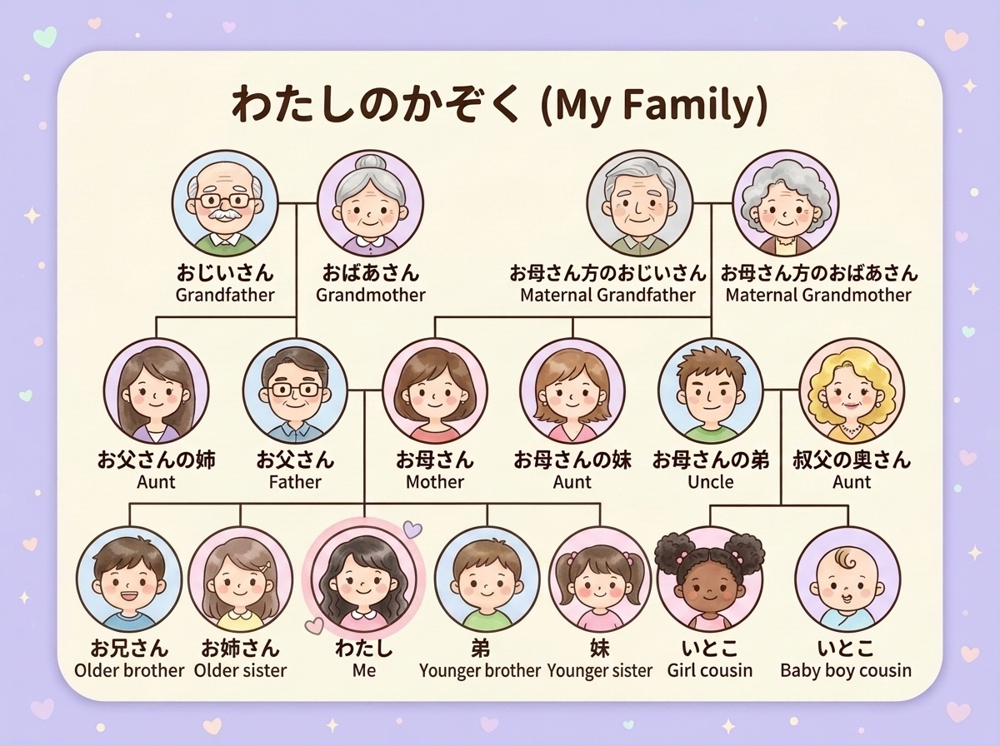

わたし の かぞく
My family（p.15）
なんにん かぞく ですか？（わたしのかぞく / My Family）
わたしの 家族(かぞく)は、お父(とう)さん、お母(かあ)さん、お兄(にい)さん、わたし、弟(おとうと)、そして親戚(しんせき)、おじいさん、おばあさんの、たくさんの家族(かぞく)です。

日本(にほん)の【家族(かぞく)】は、いっしょに すんでいる 人(ひと)のことを いいます。
あなたの 国(くに)の【family】と ちがうことが あります。
「かぞくは 〇人です。」
「日本(にほん)で いっしょに すんでいるのは 〇人です。」
In Japanese, "kazoku" usually means the people who live together with you. This can be different from "family" in your country.
You can say: "My family has 〇 people."
"The people who live with me in Japan are 〇."
れんしゅうメモ
① かぞくは 人(にん) です。
② 日本(にほん)で いっしょに すんでいるのは 人(にん) です。
③ わたしのかぞくは、 です。
15